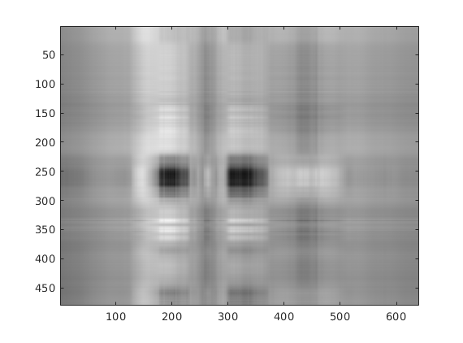
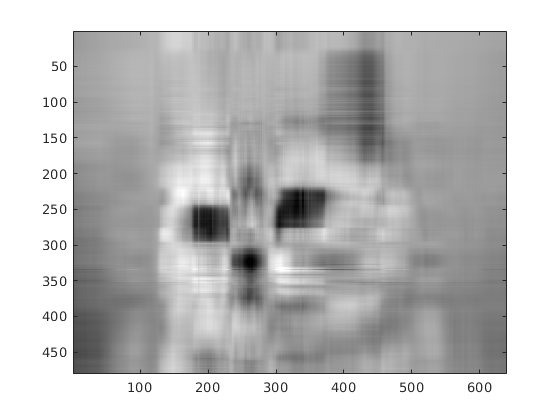
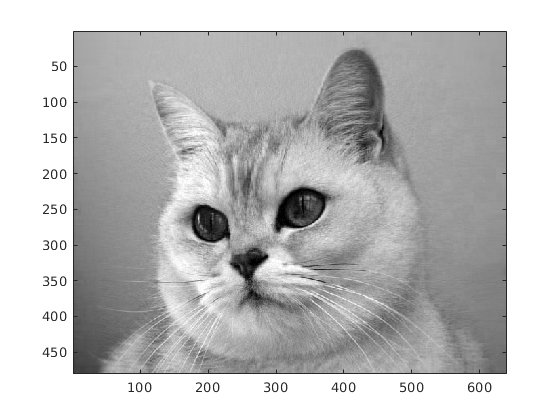

% Question 3 clear, clc % Loading in test data load('A1.mat') % Computing the SVD of A to retrienve the singular values [U, S, V] = svd(A); A_sz = size(A); A_sv = zeros(1, A_sz(1)); % Filling a linear matrix, A_sv, with the singular values for i = 1:A_sz(1) A_sv(i) = S(i, i); end % Finding maximum and minimum singular values A_sv_range = [max(A_sv), min(A_sv)]; % Amount of singular values from question image_sv = [2 6 10 15 20 30 50 100]; A_sizes = zeros(1, length(image_sv)); % Creates new matrix filled with specified number of singular values % from the array, image_sv, and displays the new figure. A_sizes holds % the storage required for each figure for j = 1:length(image_sv) new_mat = zeros(A_sz(1), A_sz(2)); for k = 1:image_sv(j) new_mat(k, k) = A_sv(k); end new_A = U * new_mat * V'; A_sizes(j) = 100 * image_sv(j)/A_sz(1); figure(j) colormap(gray(256)); image(new_A); end  